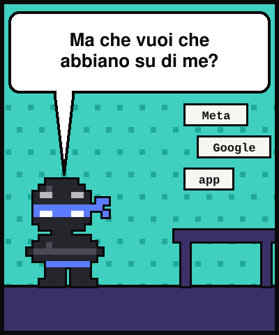
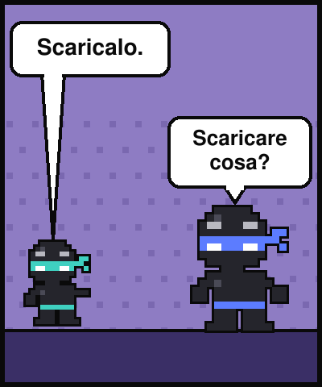
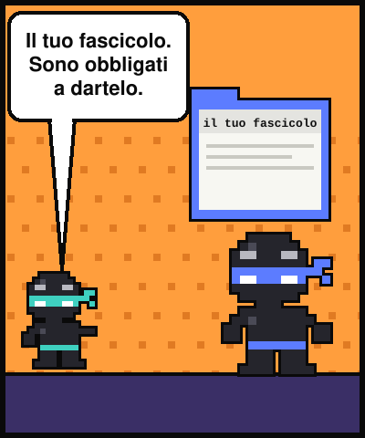
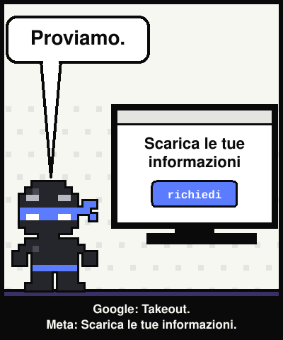
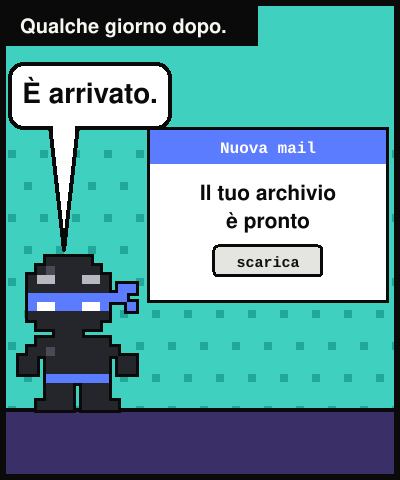
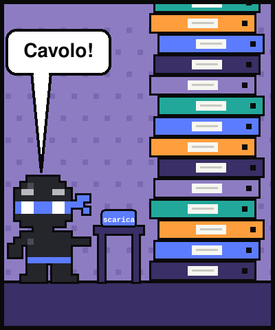
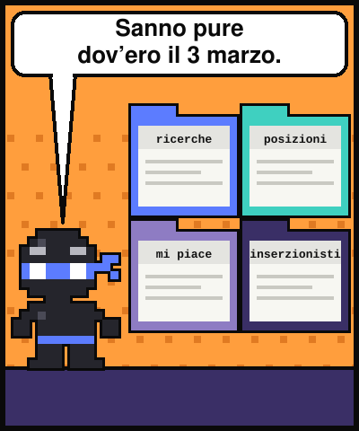
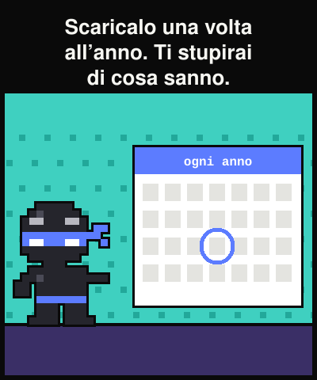

Lezione dal 2077 · n.006
«Ma che vuoi che abbiano su di me.» Me lo sono chiesto per vent'anni. Poi ho premuto scarica, e ci ho messo un pomeriggio a finire di leggere.








Al bar faccio il tranquillo: «Che vuoi che abbiano su di me, la spesa e i gatti.»
Un ragazzo di ventidue anni: «Scaricalo.» Il tuo fascicolo. È un tuo diritto.
Google e Meta hanno una pagina ufficiale che ti consegna una copia di quello che hanno: Takeout da Google, Scarica le tue informazioni da Meta. È il diritto di accesso.
Dentro: ricerche, video, posizioni, messaggi, foto. Non è un file. È un archivio. Finché non lo apri, stai indovinando.
«Non sai cosa hanno su di te finché non lo scarichi. Dopo lo sai per sempre, e dormi meglio lo stesso.»